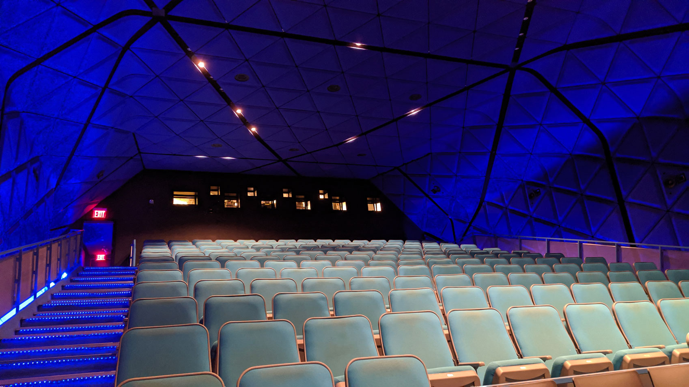
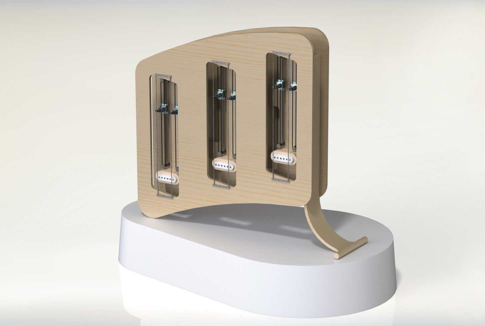

Robotic Musical Instrument
Together with fellow engineers Chris Pratt and Matt Weir (of Algonaut), we are building a unique robotic musical instrument. This instrument will produce innovative sounds and will expand the boundaries of music performance and composition.
For the first phase of the project we built two working prototypes and premiered them at the Museum of the Moving Image in New York City in March 2020.
Prototype

In a workshop kindly donated by Auckland manufacturing company Railblaza, we built the major robotics components, including the full note selection and activation system, and an electromagnetic sound production mechanism. For the prototypes, instead of constructing the entire instrument we adapted these components and attached them to a guitar. While it does not offer the flexibility of the final design, it does offer a valuable approximation and the results are beautiful instruments in their own right.
Audio Sample
We have not yet had the opportunity to explore the capabilities of the prototype, however we did record a preliminary audio sample before we left to New York.
With the support of Creative New Zealand, we are now exploring the creative capabilities of the prototypes.
Future Design
In the future we will remove the guitar and instead build a fully unique instrument, further expanding the sonic possibilities.
The instrument is a six stringed instrument housed in a wooden frame. The sound is produced by electromagnetic systems attached to each string that cause the string to vibrate when activated. The pitch is controlled by solenoids that slide up and down rails adjacent to the strings, adjusting the string length and therefore pitch. Both of these systems are driven by stepper motors, which are controlled by Arduino microcontrollers. The instrument is played by sending MIDI signals to the microcontrollers, which is what allows it to perform using computer signals alone.
The instrument has a unique set of sonic characteristics. The electromagnetic system allows for a slow build and slow decay of the sound, and for infinite sustain, while maintaining the warm, round tone of an untouched string. These techniques are usually limited to bowed instruments, which come with an associated sharper bowed sound. Instead of a slow build, we can also use the mechanical activation to produce a strong and confident note onset. The mechanical nature facilitates movements that would be impossible for a human player, but also introduces new limitations such as motor speed, resulting in unique compositional possibilities. The nature of the electromagnetic vibration and the new instrument body also results in a unique harmonic composition of the sound.